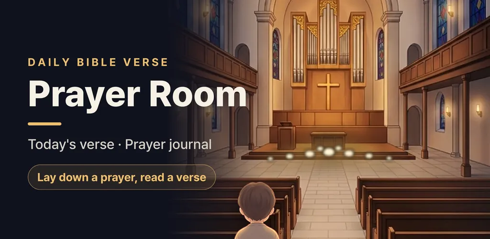
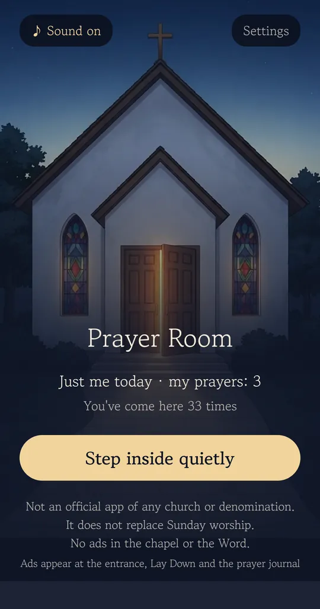
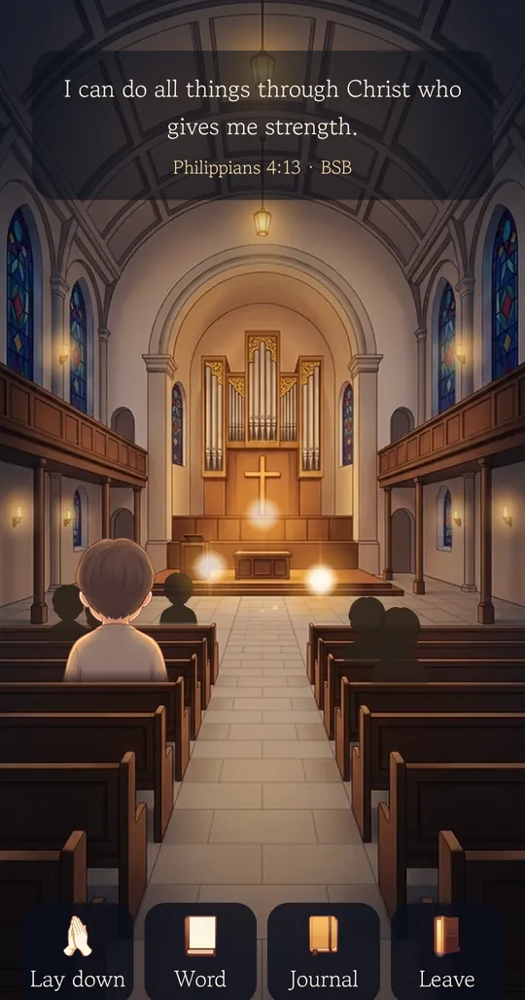
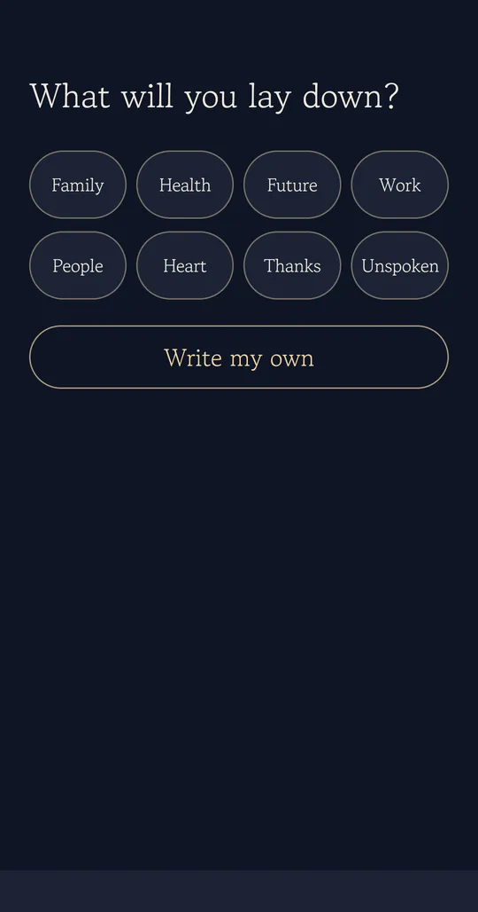
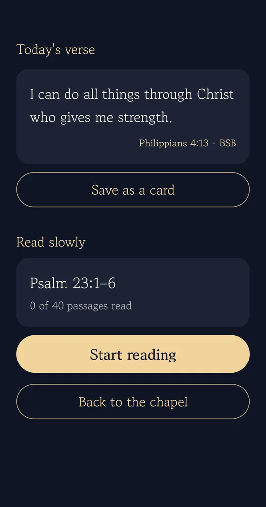
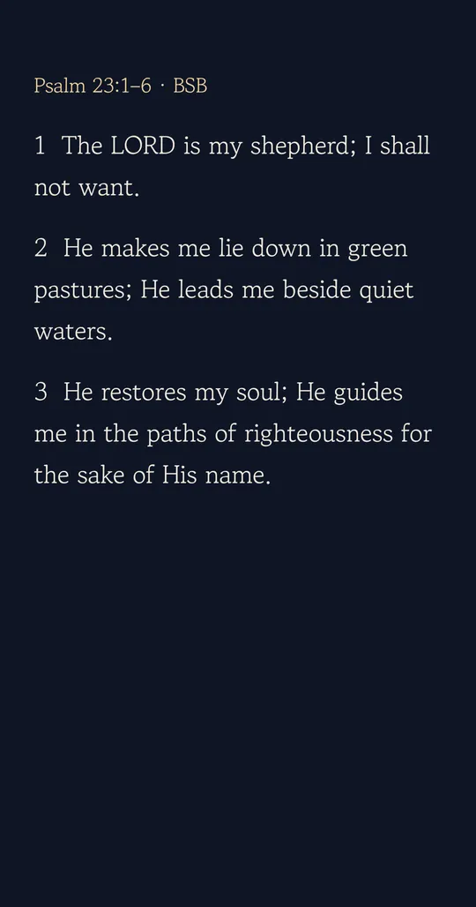
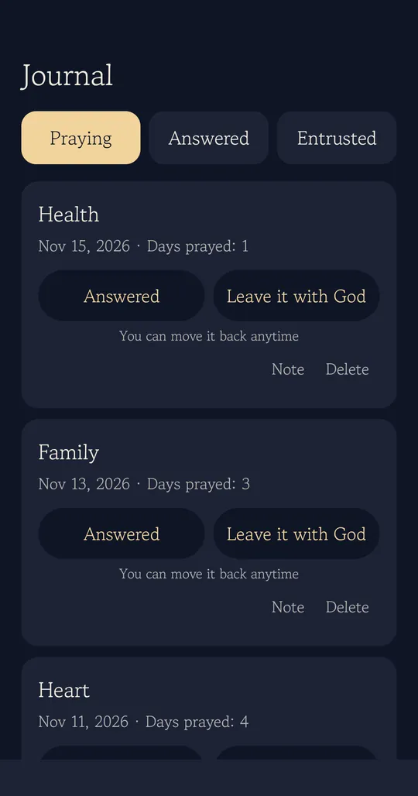

Daily Bible Verse: Prayer Room
Sit in a quiet chapel, lay down a prayer, read today's verse. No subscription.







About this app
Prayer Room is a quiet chapel at dawn where you can sit for a moment and go.
Lay one prayer down before the cross, read today's Bible verse, and leave. You can also just sit there and do nothing at all.
Bible text: Berean Standard Bible (English) and the Korean Revised Version (Korean). The app interface is translated, but the Bible text is shown in English in all languages other than Korean.
Lay down a prayer — a small light that stays for 7 days
Pick family, health, future, work, relationships, heart, thanks or silence, or write one line of your own, and lay it down.
Your prayer becomes a small light in front of your seat and stays for 7 days. Come back and it is still there.
What you write is stored only on your phone and is never sent anywhere.
Today's verse — the same verse for everyone
One verse a day, chosen by date from 120 verses of rest and comfort. Everyone who comes in today reads the same verse.
Save it as a verse card to your gallery or send it to someone.
Slow reading — one verse per tap
Read 40 passages from the Psalms, the Gospels and more, one verse at a time. At the end you may write one line in answer to a fixed question, or skip it.
Prayer notebook — praying, answered, entrusted
Your prayers gather in a notebook. Move them to Answered or Entrusted whenever you like.
It counts the days you prayed but never blames you for days you missed. Make a prayer request card or a thank-you card, and export the whole notebook as text.
The chapel today
The chapel shows how many people visited today and how many prayers rest before the cross, as lights. No names, no content, only counts.
The light changes with dawn, day, evening and night, and you can play Chopin nocturnes (public domain recordings) softly in the background.
Good for
People who want to read one Bible verse a day in quiet, keep a prayer list and look back on answered prayers, or need a calm place to sit for a minute.
Please note
This is not an official app of any church or denomination, and it does not replace Sunday worship.
The app adds no commentary, devotional writing or written prayers. Only Bible text and fixed questions.
Bible text is public domain and reproduced without a single change.
No subscription, no payments, no sign-up. Daily verse notifications come only if you turn them on, once a day at the time you choose.
Ads (banner, and a full-screen ad after laying down a prayer) appear on the entrance, lay-down and notebook screens. The chapel and the Bible screens have no ads.
Android · free with ads · Developer: RealTunaLove · Store listing in 17 languages